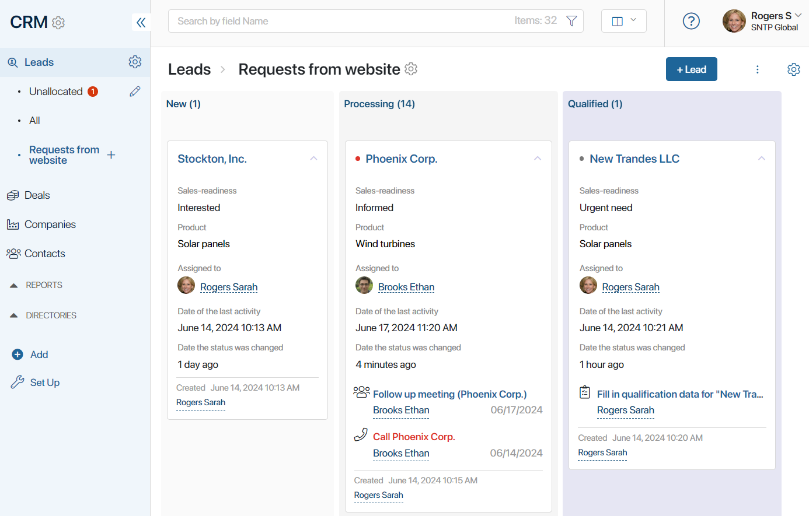
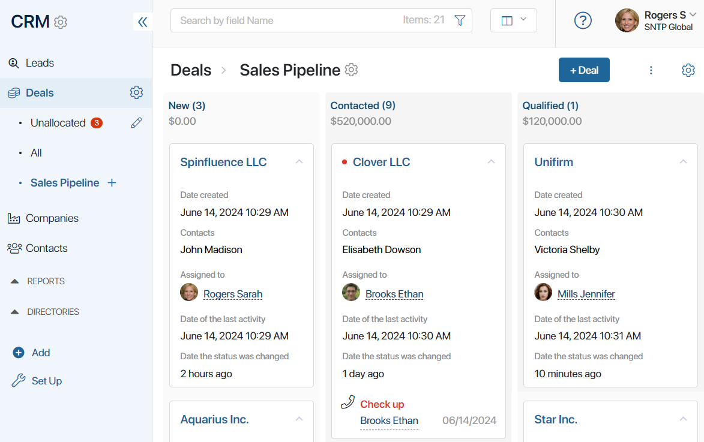
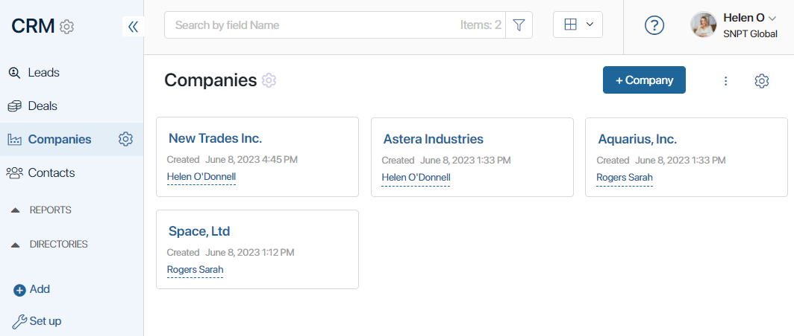
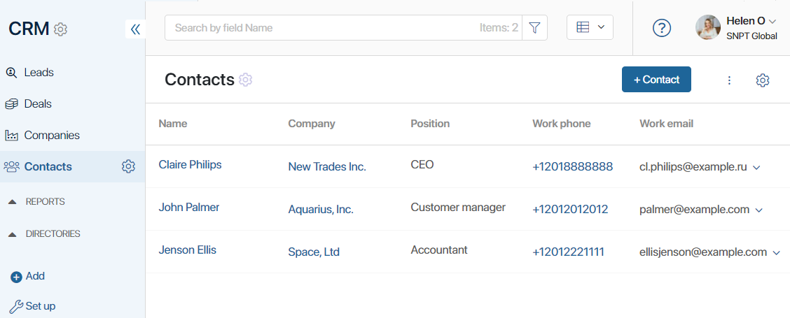
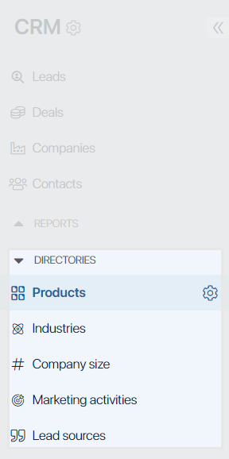
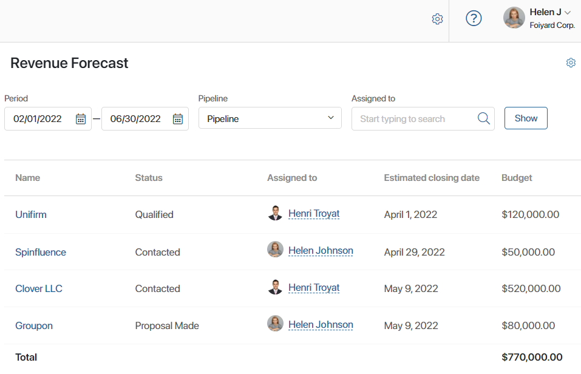
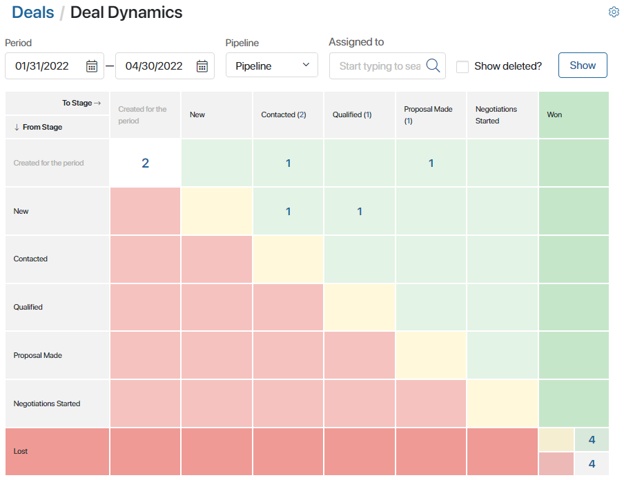
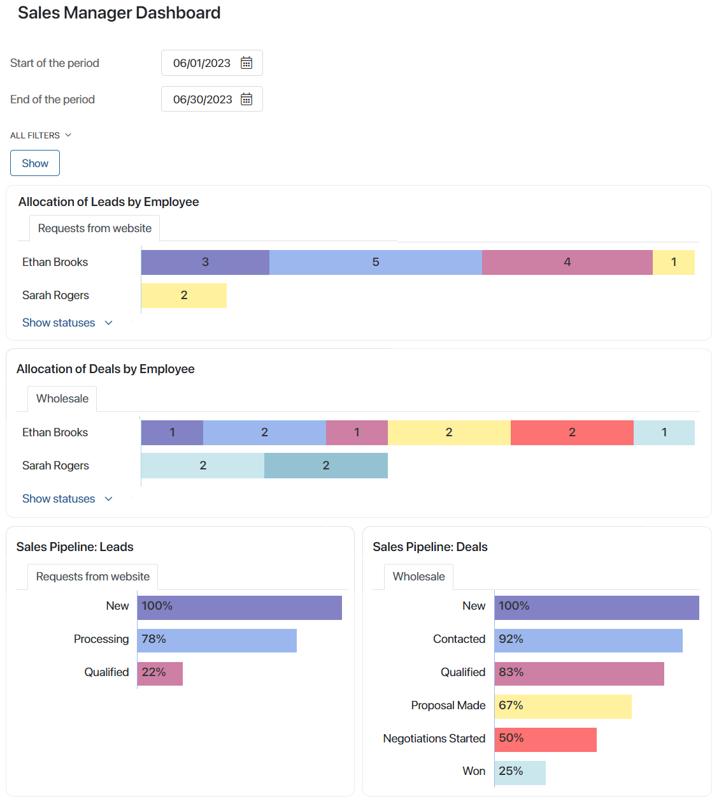
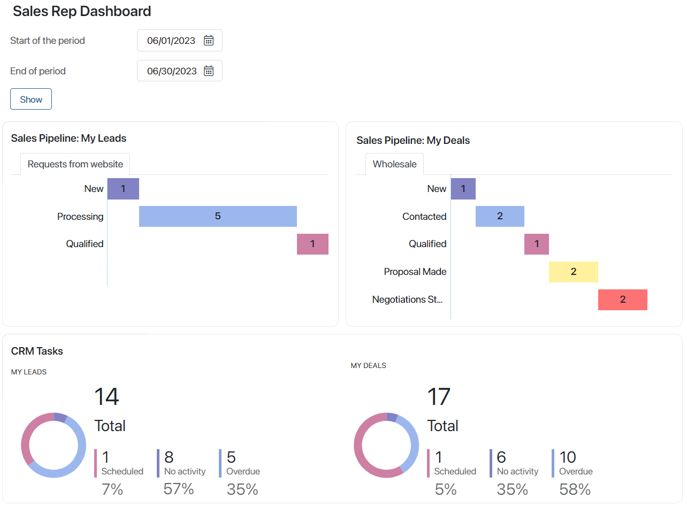
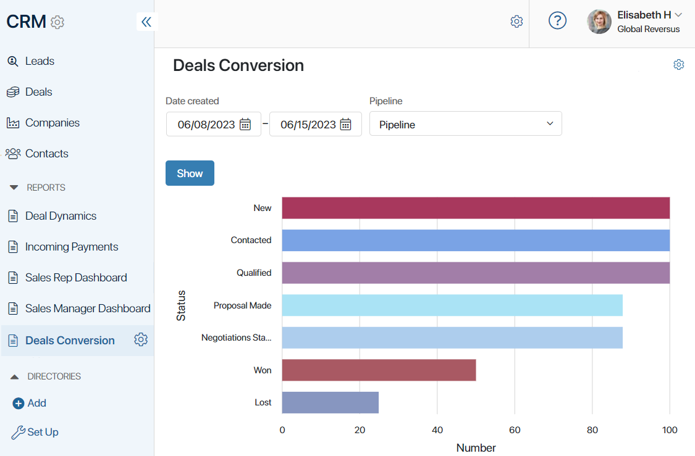

The CRM workspace helps you streamline the customer relationship. You can manage leads and deals, assign responsible employees, as well as set and monitor sales reps’ tasks. Moreover, the workspace stores all information about your customers, contacts, deals, and payments.
Note that if you don’t have the BRIX CRM system solution license, you will see only the Companies and Contacts apps in the workspace and will be able to work only with them.
Leads
The Leads app stores all the information about your potential customers. You can optimize the work of the sales department by separating new requests from active deals.
On the app page, leads are shown on a Kanban board and are grouped by stages. You can easily track their progress within a pipeline. You can open a lead's page and see the designated sales rep, current tasks associated with it, and the product the client is interested in.
If the customer shows strong interest in buying, you can qualify the lead, creating a new deal.

Read more about working with leads in the following articles:
- Leads.
- Create or delete a lead.
- Lead pipeline.
- Leads layout.
- Lead page.
- Manage statuses. Lead qualification.
- Unallocated leads page.
- All leads page.
- CRM tasks.
- Search and filters in the CRM workspace.
- Access settings for CRM apps.
Deals
When a lead is prepared to buy, you can create a new deal and work with the customer in the Deals app.
Much like leads, all your deals are shown on pipeline pages on a Kanban board. Each column represents a deal status. These can be New, Contacted, Qualified, Proposal Made, Negotiations Started, etc. Statuses allow you to easily track each stage of working with a customer.

All important information about a deal is stored on its page. Click on the name of a deal to see the assigned sales rep, the customer’s info, order details, stage, communications history, tasks, comments, and so on.
Read more about working with deals in the following articles:
- Deals.
- Create or delete a deal.
- Deal page.
- Manage status. Close a deal.
- Deal pipeline view.
- Unallocated deals page.
- All deals page.
- Deal pipeline.
- Move a deal to another pipeline.
- CRM tasks.
- Search and filters in the CRM workspace.
- Access settings for CRM apps.
Companies
This app is your customer database. The company page displays contact details, information about its segment and industry, a list of tasks, related leads and deals that were concluded with the organization.
A company page can be easily customized to fit your requirements. For example, you can add custom fields or display the hierarchical structure of an organization if its branches are added to your customer base.

Learn more about working with this app in the following articles:
- Companies.
- Companies app settings.
- CRM tasks.
- Search and filters in the CRM workspace.
- Access settings for CRM apps.
Contacts
The Contacts app stores information about contact persons who represent the companies that you work with. A contact can be associated with a specific company and deal. A contact’s page displays information about the employee’s position, phone number, and email address.
The history of communications with a client is saved in the system and displayed on the contact’s page. This helps track all recent interactions with a contact in one place. Moreover, based on this data, the customer’s nurturing stage is determined, that is, whether they are ready to purchase.

Learn more in the following articles:
- Contacts.
- Create or delete a contact.
- Contact page.
- Contacts app settings.
- Activity log settings.
- Track activity log.
- CRM tasks.
- Search and filters in the CRM workspace.
- Access settings for CRM apps.
Directories
The Directories section stores data used by other CRM apps. For convenience, all information is structured as lists and tables. The data from the directories can be added to the page of a company or a lead.
There are several pre-configured directories:
- Products. A list of goods or services your company provides. When creating a lead, you can indicate which product they are interested in buying.
- Industries. A list of industries that your counterparties may belong to.
- Company size. A list of sizes of the companies that you work with, for example, small, medium-sized, and large.
- Marketing activities. Activities aimed at attracting new customers.
- Lead sources. Channels through which your customers find you.

Read more in the Directories article.
Reports
Reports offer lead and deal analytics, information about the current sales volume, and each employee’s workload.
- The Revenue Forecast report shows the budget of deals from the sales pipeline you select. You can sort deals by the planned closing date or by the responsible employee. Under the table, you can see the total estimated revenue.

- The Deal Dynamics report shows the current state of your deals in a certain pipeline. You can see the number of deals on each stage of the pipeline and track deals that have progressed from one stage to another or have been closed or marked as lost over a specific period.

- The Sales Manager Dashboard provides reports that allow the CCO and the department heads to analyze the performance of sales reps and sales teams when they work with leads and deals. The data is broken down into several graphs and lists. The following information is provided:
- Allocation of Leads/Deals by Employee. Shows the number of leads or deals in each status across all pipelines.
- Sales Pipeline: Leads/Deals. Allows you to track what percentage of leads or deals moved to each pipeline status.
- Top deals. Shows five most profitable active deals.
- Goal/estimated/received payments by employee. Shows the estimated fulfilment of the sales goals as well as the amounts of planned and actual incoming payments by employee.

- The Sales Rep Dashboard shows employees who work with sales their personal performance metrics on active deals and leads as well as incoming payments and sales goals. The information is presented in several charts and lists.
- Sales goals fulfilment metrics. The three sections show how the goal, the planned, and the actual amounts of incoming payments correspond to each other.
- Sales Pipeline: My Leads / My Deals. Shows the number of leads and deals in each status across all pipelines.
- CRM Tasks. Shows how efficiently the employee fulfills associated with all leads and deals.
- Top 5 Deals. A list of active deals with the biggest budget.
- My CRM Tasks for Today.

- The Leads or Deals Conversion report is not added to the workspace by default, but you can place it on a custom page. The chart shows the percentage of items that have moved to a certain status in a pipeline. This can be used by the sales department, for example, to see the percentage difference between the total number of added deals and the ones that are won or lost.

Found a typo? Select it and press Ctrl+Enter to send us feedback